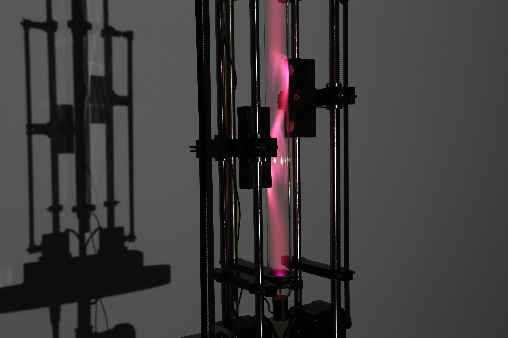
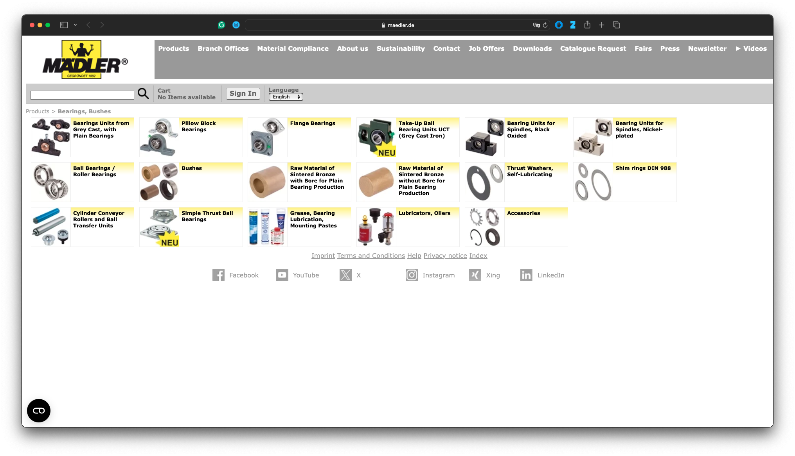
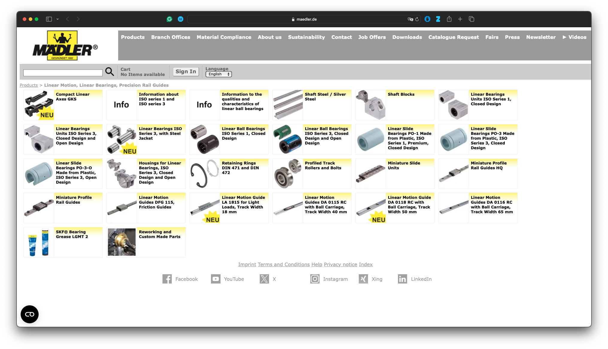
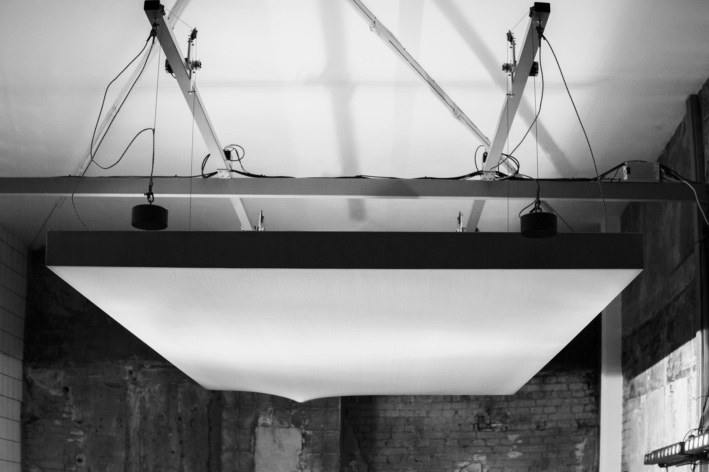
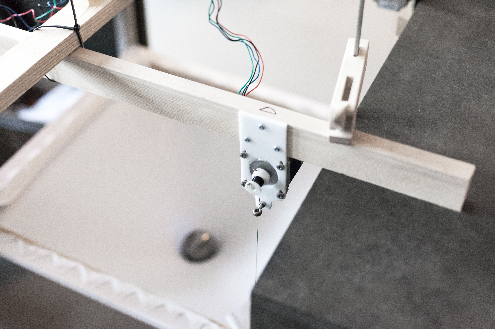
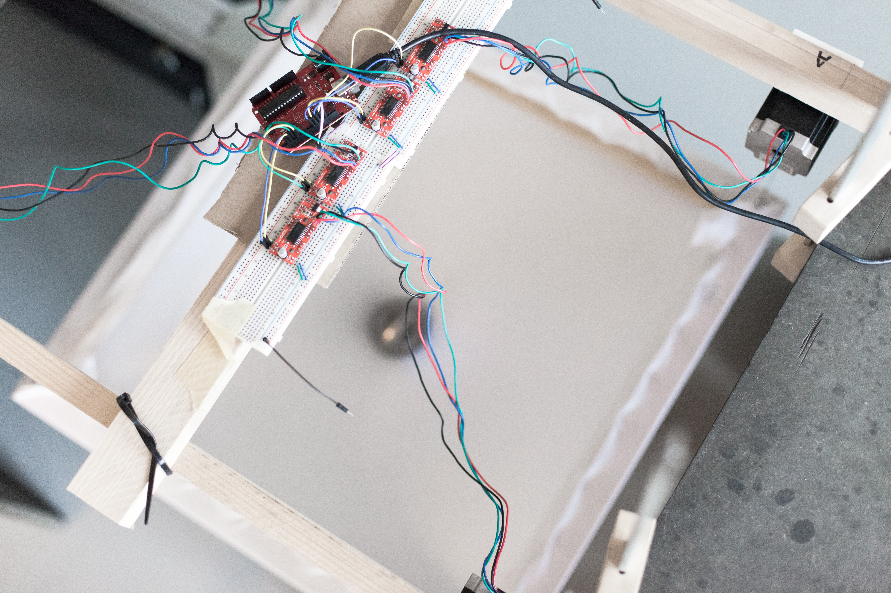
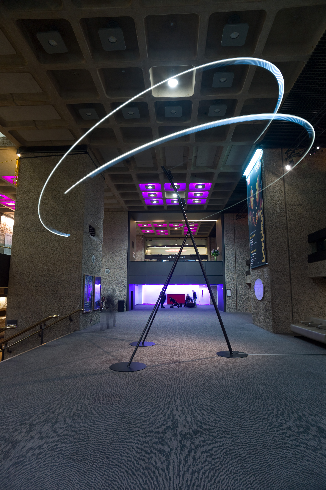
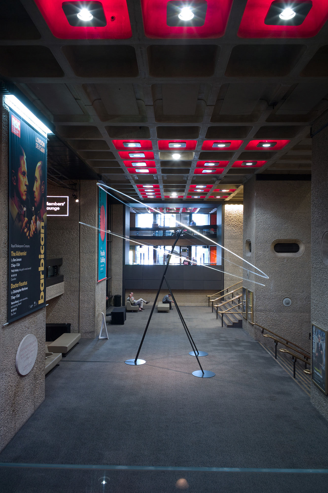
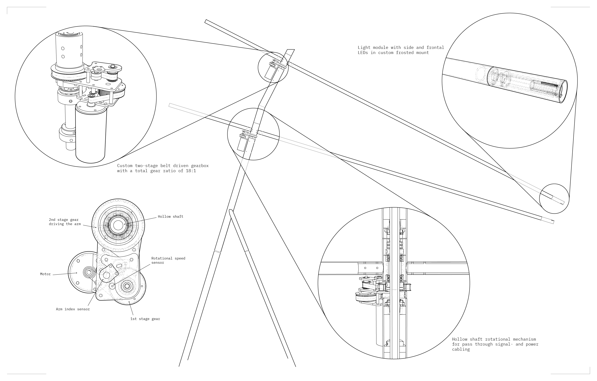
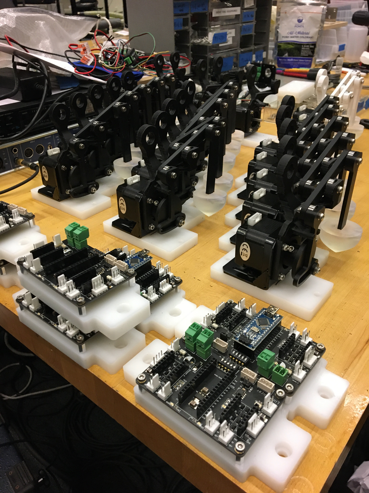

Mechanism of Control - 10th Dec 2025
Motion
as a means for
Expression
Building Kinetic Art Installations
Why Motion?
What does motion do in an artwork?
Movement evokes:
- Emotion (tension, playfulness, calm)
- Attention (direction, timing)
- Life-like qualities (breathing, twitching)
“Motion is time made visible.”
Len Lye


Axes of Motion
Understanding Motion as a Design Material for kinetic art, spatial design & creative mechatronics
Motion is not just displacement
— It is a language.
The language of motion
Understanding its parameters allows us to compose expressive, legible, and meaningful behaviour.
Axes of Motion
Temporal
Spatial
Kinetic Texture
Force & Effort
Interaction
Systemic
Expressive
Perceptual
Energetic & Sonic
Temporal Axes
Speed, Timing & Flow
- Fast ↔ Slow
- Constant ↔ Variable speed
- Continuous ↔ Intermittent
- Predictable ↔ Unpredictable timing
Speed ↔ Slowness
- Fast = urgency, alertness
- Slow = calm, weight, intention
- Students often forget that slow is expressive.
Continuous ↔ Choppy Motion
- Smooth interpolation
- Abrupt stepping or pulsing
- Useful to signal texture, energy, or friction
Predictable ↔ Unpredictable
- Regular rhythm → stability, neutrality
- Irregular timing → tension, “life-like” behaviour
Spatial Axes
Geometry & Extent of Motion
- Small ↔ Large amplitude
- 1D ↔ Multidimensional pathing
- Contained ↔ Expansive
- Local ↔ Distributed
Small ↔ Large Amplitude
- Micro-motions: subtle, ambient, intimate
- Large gestures: spectacular, architectural
1D ↔ Multi-Dimensional Trajectories
- Linear slide → circle → spiral → compound curves
- Multi-dimensional motion communicates complexity
Kinetic Texture
How Motion Feels
- Stiff ↔ Soft motion
- Mechanical ↔ Organic
- High ↔ Low jerk
- Damped ↔ Resonant
- Smooth ↔ Textured
Mechanical ↔ Organic
- Angular, rigid → mechanical character
- Curvilinear, flowing → organic character
Low Jerk ↔ High Jerk
- Low jerk = graceful
- High jerk = nervous, robotic, alert
Damped ↔ Resonant
- Damped: stops quickly, stable
- Resonant: overshoot, oscillation, wobble
Force & Effort
From Laban Movement Analysis
- Light ↔ Strong effort
- Free ↔ Bound motion
- Direct ↔ Indirect pathing
Light ↔ Strong Effort
- Light = delicate, ephemeral
- Strong = assertive, grounded
Direct ↔ Indirect
- Direct = purposeful trajectory
- Indirect = searching, wandering
Interaction Axes
Motion in Relation to People
- Responsive ↔ Autonomous
- Synchronous ↔ Asynchronous
- Passive ↔ Expressive
Responsive ↔ Autonomous
- Directly reacting to input
- Self-driven behaviour patterns
Systemic Axes
Motion as Behaviour Over Time
- Linear ↔ Cyclic ↔ Chaotic
- Deterministic ↔ Probabilistic
- Single-mode ↔ Multi-mode
Materiality of Motion
- Rigid ↔ Flexible bodies
- Heavy ↔ Light apparent mass
- Dry ↔ Fluid motion
Expressive Axes
Meaning & Perception
- Neutral ↔ Emotional
- Functional ↔ Symbolic
- Human-like ↔ Nonhuman
- Foreground ↔ Background motion
Perceptual Axes
How Motion Is Experienced
- Visible ↔ Invisible
- Rhythmic ↔ Arrhythmic
- Stable ↔ Uncanny
Energetic & Sonic Axes
- Low-power ↔ High-power motion
- Quiet ↔ Noisy actuation
- Motor sound as an expressive layer
Motion Is a Multi-Dimensional Design Space
Concepts to explore:
- Timing
- Geometry
- Texture
- Effort
- Behaviour
- Materiality
- Perception
- Expressivity
Thinking with Motion
Motion vocabulary exercise:
Make a motion that describes:
Twitch
Make a motion that describes:
Unfurl
Make a motion that describes:
Lurch
Make a motion that describes:
Vibrate
Make a motion that describes:
Hover
Make a motion that describes:
Hesitate
How can we describe a concept through movement alone?
Mechanics 101
— What We Need to Know

Types of Mechanical Motion
| Motion | Mechanism | Use Case |
|---|---|---|
| Rotation | Motor, shaft | Continuous spin |
| Oscillation | Crank + linkage | Arm swinging back & forth |
| Push / Pull | Cam, linear actuator | Controlled displacement |
| Inflation | Pneumatic bladder + valve | Organic soft expansion |

Bearings:
reduce friction + stabilize long shafts
Torque:
matching motor strength to load
Play and backlash:
loose linkages wobble
Mounting:
flex and misalignment kills precision


Mechanics Can Be Expressive
A loud click can say more than a light blink





| Mechanical Concept | Thoughts or Framing |
|---|---|
| Load & Torque | “Can your motor carry the weight of your idea?” |
| Alignment | “Think of it like choreography—every part needs to hit its mark.” |
| Friction | “Friction is the silent killer of motion—feel how things resist.” |
| Play / Slack | “A little looseness can cause a big wobble.” |
| Motion tuning | “You’re not just building structure, you’re shaping time.” |




Build Considerations
- Materials:
- Wood vs. plastic vs. aluminium vs. foam
- Stability: long arms need bracing and power
- Friction: pulleys vs. direct drive
Test early: “Even paper mechanisms can reveal a lot”
Sketching a Motion
Sketch a kinetic response to the word “hesitate”
- What kind of motion fits?
- What mechanism might produce it?
- What motor or actuator would drive it?
DEMO - Stepper Motor Control
Exercise
Create 3 different motions using the same motor hardware, each expressing:
- Breathing
- Warning
- Curiosity
Constraint:
Only change timing, amplitude, and trajectory.
Wrap-Up Thoughts
Motion is both technical and poetic
Start simple, test early (paper or cardboard)
Think of mechanics as your movement vocabulary
Resources
- Book: Kinetic Art – Theory and Practice
- Gear Generator
- Mechanisms (with animations): 507 Mechanical Movements
- Pneumatics: Soft Robotics Toolkit
- Arduino stepper motor control: Accelstepper Library
- How to size Motors for your Project
- Mechanical Design by CBA @ MIT
- Machine Designs by CBA @ MIT